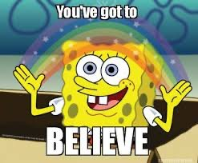

--Jed McKenna
“Sacred cows make the tastiest hamburger.”
--Abbie Hoffman
A dear friend of over 30 years asks me with some frustration, “But what is it you believe? I can’t figure it out.”
Here he is, no longer knowing where I stand on spiritual things.
And here I am, knowing that his beliefs are all about love and light and positive thinking and gratitude and surrender. In fact he told me so recently, again, for the zillionth time.
So I know his positions. I know what he believes.
And I wish I could agree with him. It would be so much easier. I mean, love and rainbows are wonderful things.
They’re as good a dream as any to describe how things are. Even if that viewpoint is not borne out in any version of reality except wishful thinking.
And now my friend patiently waits for me to answer and meet him in Agreement-Land.
Which I can’t. So instead, I change the subject.
Because I’m not prepared to lose a friend.
After all, beliefs define us. They tell us who we are, as a person.
Who am I and What do I believe? go hand in hand.
"I am the one who believes the world is flat, that politicians kindly work for our best interests, and that lizard people walk among us. And you, you are the one who is wrong. Go stand over there with those other wrong people, and keep your lizard tongue to yourself."
"I belief love is our true nature. I believe we can and must transcend human ego to attain a level of consciousness where awareness is aware of itself at all times."
Beliefs tell us what side we’re on, what our position is, where we stand.
All of which are words of location. Here I am! There you are!
Beliefs locate the self and provide a sense of realness.
So I get why my friend wanted to know mine. He wanted to place me.
And of course over the years, he’s not the only one who has asked me this question. Many of you lovely readers have asked so often, you’ve given up all hopes for an answer.
Though if you were paying attention, you’ve found tons of Judy-beliefs waving hello in these 7 years of weekly Mind-Ticklers.
Surprisingly, today for whatever reason, I somehow seem to be in the mood to atone for all that sidestepping.
So here in no particular order are a few random ideas I believe.
They’re absolutely useless to absolutely anybody, including me.
But to make them feel special and to pretend they’re important, here are also some back-up quotes from much more believable people than moi.
• We are nothing.
At most, we’re a thought, a sensation, a color, a sound. None of which can actually be literally found. Nothing looking for any of that- no self, no ego, no personality- can be literally found either. What sees that body we think we are? Nothing.
When this is experienced, the sense of self goes poof. Because it has no location. It isn’t anywhere.
”We are nothing but images of images. Reality, including ourselves, is nothing but a thin and fragile veil, beyond which … there is nothing.“ --Carlo Rovelli
“Self-referencing is the mind's tendency to locate itself. When it's realized that there is no self apart from the perceiving, then the tendency to try to find one's Self in any experience, insight, or concept ceases.” --Adyashanti
“You are the illusion. If one illusion goes, it is always replaced with another illusion. Why? Because the ending of the illusion is the ending of 'you'. The ending of belief is the ending of 'you'... You think that there is somebody who is thinking your thoughts, somebody who is feeling your feelings. That's the illusion.” --U G Krishnamurti
“This is a dream. Because you're really nothing. But this is most incredible nothing. So cheer up! You see?”—Alan Watts
You see? Of course you do.
But-
“Nothingness is really like the nothingness of space, which contains the whole universe. All the sun and the stars and the mountains, and rivers, and the good men and bad men, and the animals, and insects, and the whole bit. All are contained in void. So out of this void comes everything and You Are IT. What else could You BE?”—Alan Watts
In which case,
• We are everything.
We are every experience. We are every thought, every word, every sound, every color. When this is experienced, the sense of self goes poof. Because it has no center. It’s everywhere.
“I am that. I am the source of all that is, and so are you... We are nothing, let us be all.” --Tony Parsons
“You are revealed to be a presence. Presence is not a self in any conventional sense. It has no shape or form, no age or gender. It is an expression of universal being, the formless substance of existence. Presence is not subject to birth or death; it is not of the world of “things.” It is the light and radiance of consciousness in which entire worlds arise and pass away.” --Adyashanti
• We'll never know what consciousness is.
“Consciousness is that in which all experience appears, with which all experience is known and out of which all experience is made.” --Rupert Spira
Ok. And what is "that," exactly?
We can surmise and infer, and that’s all. We’re not capable of seeing outside our brain, our senses, our conditioned filters; we can only know what the limited apparatus allows us to perceive. Anything outside the apparatus can not be known.
We sure have plenty of beliefs about it though.
“Objective reality is just conscious agents, just points of view. Neurons, brains, space … these are just symbols we use, they’re not real. It’s not that there’s a classical brain that does some quantum magic. It’s that there’s no brain! Quantum mechanics says that classical objects—including brains—don’t exist.” -- Donald Hoffman
• We are being done, 100%.
We have no idea what does the doing, though there's plenty of seems-like-they-know-something beliefs out there. Whatever it is, it ain’t us. We love to take credit for choice and responsibility and free will- all of which reassures us of our supposed realness. Despite the infinite amount of proof that none exists.
“Things happen by themselves. If I say "I'm doing it," I miss the miracle." --Byron Katie
“There is no separate intelligence weaving a destiny, and no choice functioning at any level. This aliveness is nothing being everything. It’s just life happening. It’s not happening to anyone. There’s a whole set of experiences happening here and they’re happening in emptiness … they’re happening in free fall. They’re just what’s happening. All there is is life. All there is is beingness.” -- Tony Parsons
• We are experience. Only.
“What you are basically, deep deep down, is simply the fabric and structure of existence itself. And you’re ALL that, only you’re pretending you’re not.” –Alan Watts
"There are not two things there, there is not somebody who wants to be free from fear. That somebody who wants to be free from fear, IS the fear." --UG Krishnamurti
“Giraffes are giraffing, trees are treeing, stars are starring, clouds are clouding, rain is raining. And people are peopling. And if you don’t understand, look at it again.” –Alan Watts
So there you go. A handful of Judy beliefs. You’re delighted, no doubt.
And there are more of course. But you’re probably ready to get back to your own.
In fact, all this someone-else’s-opinions-in-your-face might even have made you good and angry. After all, we like to gather around us only people who believe as we do, excluding others. And you, like my old friend, most likely do not agree with my odd woo-woo viewpoints.
So maybe you’re about ready to exclude me at this point.
But of course, no one ever has to agree with me. You have your own soup of beliefs. That’s what creates the sense of you. Yours will be different from the belief-soup comprising the sense of me.
Neither of us is right. Because no belief is true.
They’re all simply fairy stories we happen to like better than others.
Beliefs are stand-ins, substitutes, consciousness masquerading as a self.
They can change in a flash.
While nothing is actually changed.
Beliefs seem to be necessary though.
Otherwise, poof.
There’s nothing left
to have this conversation.
Watch Judy and Shiv Sengupta discuss spiritual anarchy
Click here to watch Judy on Buddha at the Gas Pump
Click to watch Judy and Walter have fun chatting about about
nonduality, the self, consciousness, awareness, free will
and other light and breezy stuff
Judy And Robert Saltzman talk nonduality
and https://www.youtube.com/watch?v=7fv_vsvaejs
and https://www.youtube.com/watch?v=3DAn8Rqg3I0
“All supposed knowledge is really belief masquerading as knowledge, and the word for belief masquerading as knowledge is delusion. If everything you think you know is really just belief, and if belief itself is knowably false, then your entire reality can in no way be distinguished from a dream. There is no truth in the dreamstate because, in truth, there is no dreamstate.”
–Jed McKenna
"You'll never wake up from this dream, because you ARE this dream.
And because there is absolutely nothing outside of you, for you to wake up to...
Nothing dreams you, and nothing contains you.
There is no "outside" of you.
You're existence itself - without any opposite, and without any other.
You're miraculous beyond words."
--John Mirra
